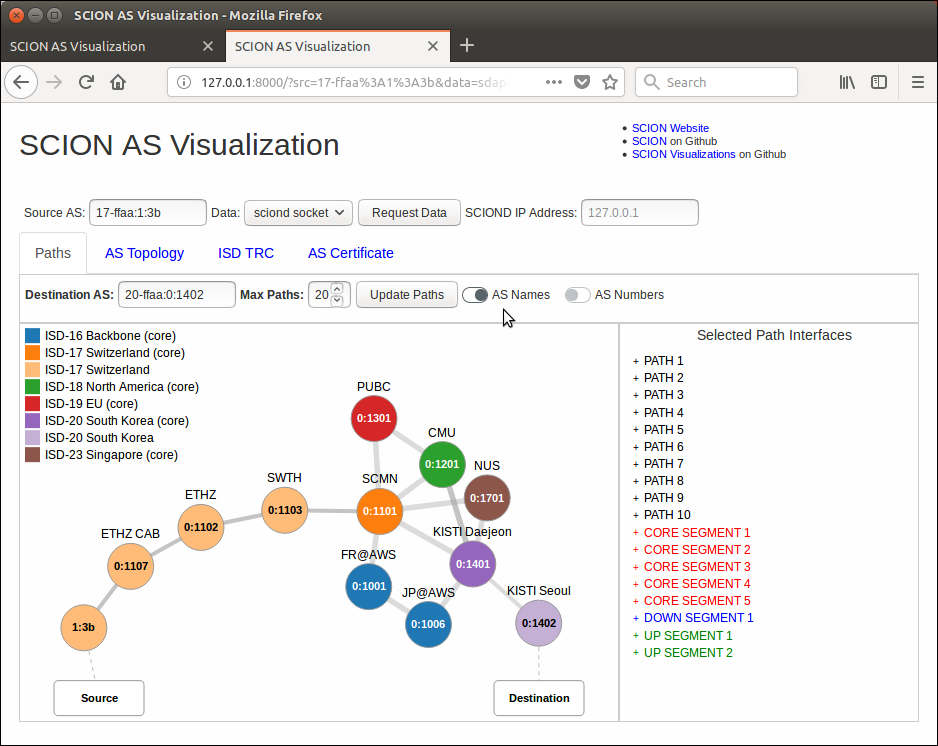
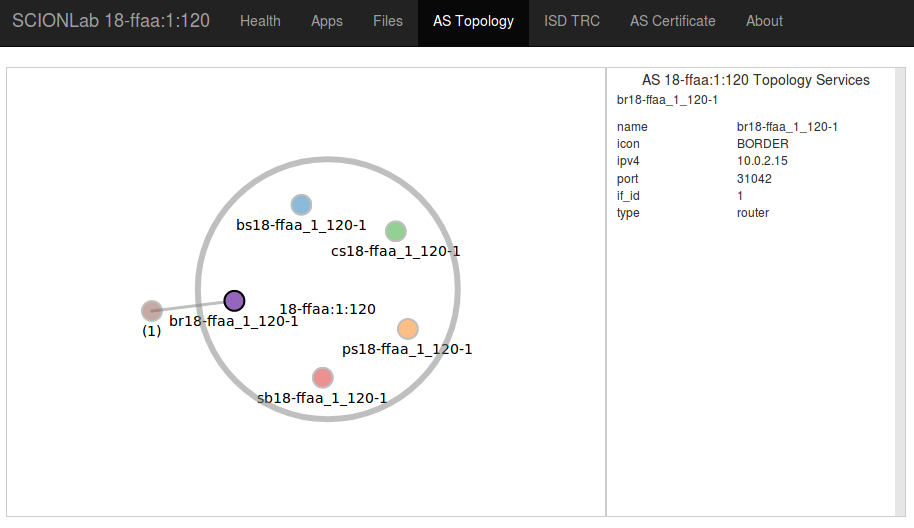
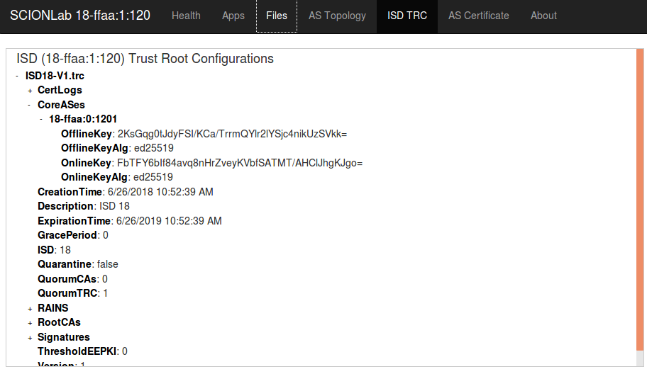
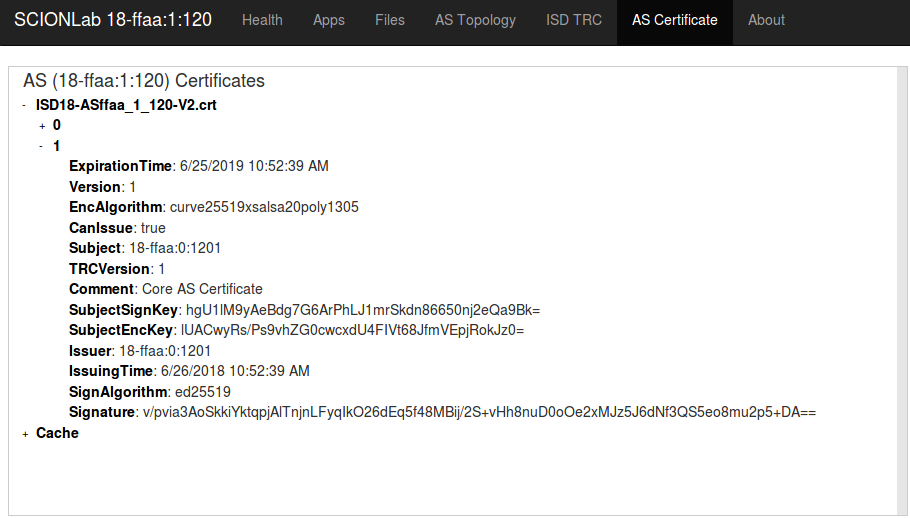

Browser AS Visualizations¶
Starting the Visualization¶
After updating the latest source code and starting the server, point your browser to http://127.0.0.1:8000 to launch the AS Visualization. Then, enter the "Source AS" ISD-AS pair of the AS you wish to view data for. Press "Request Data" to get updated data.
Viewing the SCION Daemon¶
The "Data" pull-down menu option "sciond socket" will bind to a socket to communicate with the SCION Daemon. Alternately, you can override the default IP address of the Daemon, buy entering the address you wish to bind to in the "SCIOND IP Address" text box.
SCIOND Paths¶
Enter the "Destination AS" ISD-AS pair and the maximum number of paths to retrieve in "Max Paths" and press "Update Paths" to view all announced paths to the destination from the source. The announced paths will be displayed in a combined topology in the window. To view the details of a specific path expand the path's data by clicking on the path number in the window on right side. 
SCION AS Topology¶
The composition of services and border routers for the Source AS will be displayed in the AS Topology tab. Click on any circle to view the details of that server or router.
Tip
The big circle can be clicked on as well to view details of the Source AS!

Viewing the SCION Local AS¶
The "Data" pull-down menu option "local gen dir" will display data located in the locally generated directory and may be a very limited view of the SCION network.
Local AS Topology¶

Local ISD Trust Root Configuration¶

Local AS Certificate¶
